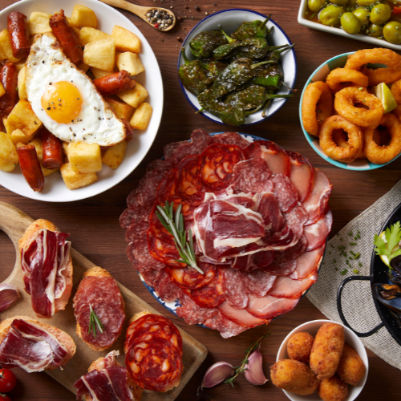
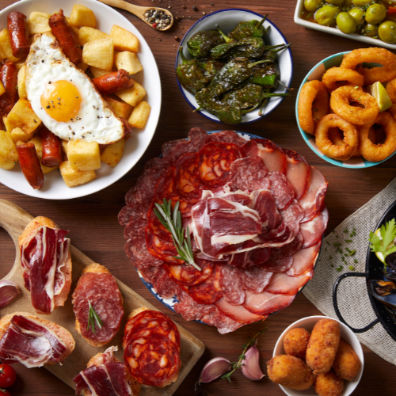
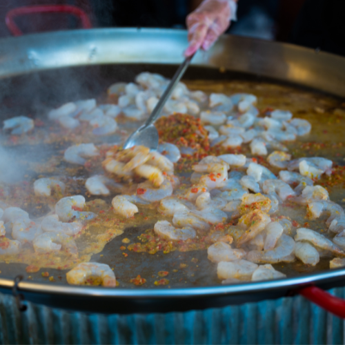
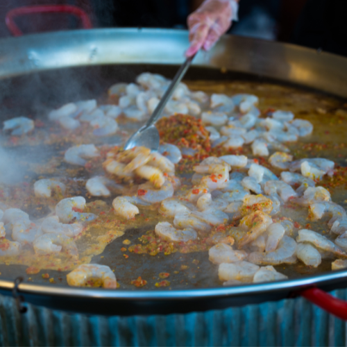

 


Nosotros
Somos una empresa argentina de origen familiar, fundada a partir del sueño de Don José y Doña Rosario. Representamos una forma de ser, pensar y hacer las cosas, trabajando cada día con amor y respeto por la tradición culinaria argentina pero apelando a una nueva matriz de sabores, más innovadora. Durante la pandemia, nos enfrentamos a nuevos desafíos y nos reinventamos. Ante el cierre temporal de nuestro restaurante, decidimos continuar con nuestro legado de ofrecer deliciosas recetas que mezclan las raíces españolas de nuestros ancestros, con todo lo que aprendimos sobre sabores regionales argentinos y para ello creamos una página web de recetas donde compartimos nuestros secretos culinarios con el mundo. En nuestro portal encontrarán platos que mantienen un equilibrio entre la búsqueda constante de innovación y el mantenimiento de la autenticidad que solo el sabor casero y la tradición pueden aportar.
Nuestra Historia
Nuestra historia comienza con un matrimonio de inmigrantes españoles, Don José García Martínez y Doña Rosario López Fernández, quienes llegaron a Argentina en 1943 y se establecieron en la localidad de San Isidro. A partir de su pasión por la cocina y la tradición familiar, comenzaron a compartir las auténticas recetas argentinas con su comunidad. Con el tiempo, sus descendientes, hemos expandido nuestro legado culinario para llegar a más personas y rincones de nuestro país. Durante la pandemia, encontramos nuevas formas de mantener viva nuestra pasión por la cocina. Aunque el restaurante ha vuelto a abrir sus puertas y continúa funcionando con normalidad, decidimos mantener nuestra página web de recetas como una forma de seguir compartiendo nuestro amor por fusión de la cocina española y argentina con el mundo.
En 3DFood estamos orgullosos de nuestra herencia, nuestras recetas y el vínculo que hemos creado con quienes nos eligen para disfrutar de momentos especiales en la mesa. ¡Gracias por ser parte de nuestra historia!